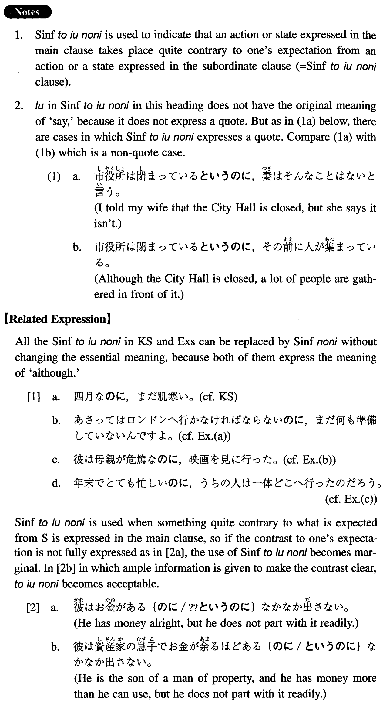

←
DoJG
→
というのに
(I. 484)
Example sentences
(ks).
四月だ
というのに
、まだ肌寒い。
It is April, but still chilly (literally: cold on the skin).
(a).
明後日はロンドンへ行かなければならない
といのに
、まだ何も準備していないんですよ。
Although I have to go to London the day after tomorrow, I haven't prepared anything yet, you know.
(b).
彼は母親が危篤だ
というのに
、映画を見に行った。
He went to see a movie in spite of the fact that his mother is in a critical condition.
(c).
年末でとても忙しい
というのに
、うちの人は一体どこへ行ったのだろう。
It's the end of the year, and we are very busy, but where in the world did my husband go?
(d).
小学四年生だ
というのに
、あの子はもう中学の数学をやっている。
The child is a fourth grader, but he is already studying junior high school math.
(e).
先生がわざわざ本を貸して下さった
というのに
、読んでいないの？
Your teacher kindly loaned a book to you, but you haven't read it?
(f).
学生は貧乏だ
というのに
、結構いい車を乗り回しているね。
Students are said to be poor, but they are driving around in pretty good cars, aren't they?
Formation
Sinformal
というのに
いい天気だ
というのに
Although it is a fine day
人が来る
というのに
Although someone is coming
無駄だ
というのに
Although it is a waste
危ない
というのに
Although it is dangerous
